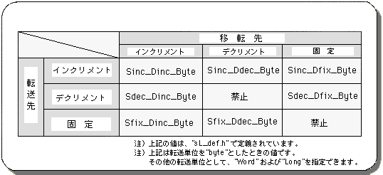
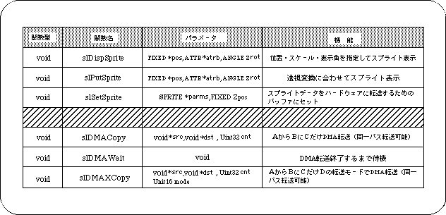

Return to previous page | Return to menu | Go to next page
9-4. Library functions used in the sample
Here is a brief introduction to some of the library functions used in the sample program that were not explained in the previous chapters and that seem to be particularly important.
At the same time, some functions related to these functions are introduced.
A function for displaying sprites.
Unlike scrolling, a sprite is a graphic data type that is used when you want to move multiple objects in smaller units and display them freely.
Sprites are often used for moving characters in games that use 2D graphics.
- [void slDispSprite (FIXED * pos, ATTR * atrb, ANGLE Zrot);]
Specify the
- position, scale, and display angle to display the sprite on the screen.
For the parameter, substitute the pointer of the four-dimensional array FIXED variable that represents the XYZ coordinate value and scale value, the start address of the area where the sprite data is stored, and the display angle.
As with the library function “slPutPolygon”, Z value sorting is also performed, but it is not affected by the current matrix.
If a negative value is assigned to the scale value, the scale is calculated from the Z position and then multiplied by the complement of the parameter scale value to obtain the display scale.
For example, when -2.0 is specified for the scale value, if there is a sprite at a position that is displayed at 0.5 times, it will actually be displayed at a scale of 1.0 times
- [void slPutSprite (FIXED * pos, ATTR * atrb, ANGLE Zrot);]
- Calculates the position using the current matrix and displays the sprite scaled according to the perspective transformation on the screen.
For the parameter, substitute the pointer of the four-dimensional array FIXED variable that represents the XYZ coordinate value and scale value, the start address of the area where the sprite data is stored, and the display angle.
As with “slDispSprite”, sprites are scaled by the specified scale value. However, if a negative value is assigned, the sprite is displayed on the screen in an inverted state.
- [void slSetSprite (SPRITE * parms, FIXED Zpos);]
- Set the sprite control command data to be passed to the hardware in the transfer list.
For the parameter, substitute the start address and Z coordinate position of the area where the sprite data is stored.
Use this function when you want to set a deformed sprite that cannot be created by a library function, or to set a window that affects only a specific sprite.
The two functions introduced here are related to DMA transfer.
In the sample program, the function “slDMACopy” is used to transfer picture data for sprites (data transfer from the picture data storage area to the character generator area).
- [void slDMACopy (void * src, void * dst, Uint32 cnt);]
- Performs block transfer of data using DMA built in the CPU.
For the parameter, substitute the start address of the transfer source memory area, the start address of the transfer destination memory area, and the block transfer amount (in bytes).
Since this function ends the transfer immediately after DMA activation, use “slDMAWait” to know the transfer completion.
- [void slDMAWait (void);]
- Wait for the completion of DMA transfer started by “slDMACopy”.
“SlDMACopy” always uses the same channel to transfer data. However, if this function is used, if the previously executed DMA transfer is in progress, it waits for the transfer to end. Will be launched.
- [void slDMAXCopy (void * src, void * dst, Uint32 cnt, Uint16 mode);]
- Library function “slDMACopy” is designed to specify how to move the pointer. For the parameter, substitute the transfer start address of the transfer source memory area, the block transfer amount (unit: bytes), and the transfer mode flag. The transfer mode flag specifies what to do with the address of the transfer source memory area, what to do with the address of the transfer destination memory area, and what to do with the transfer unit. The specification method is as follows.
Figure 9-8 “slDMAXCopy” parameter substitution value (mode)

In this chapter, the functions in the following table were explained.
Table 9-3 Library functions that appeared in this chapter

Return to previous page | Return to menu | Go to next page